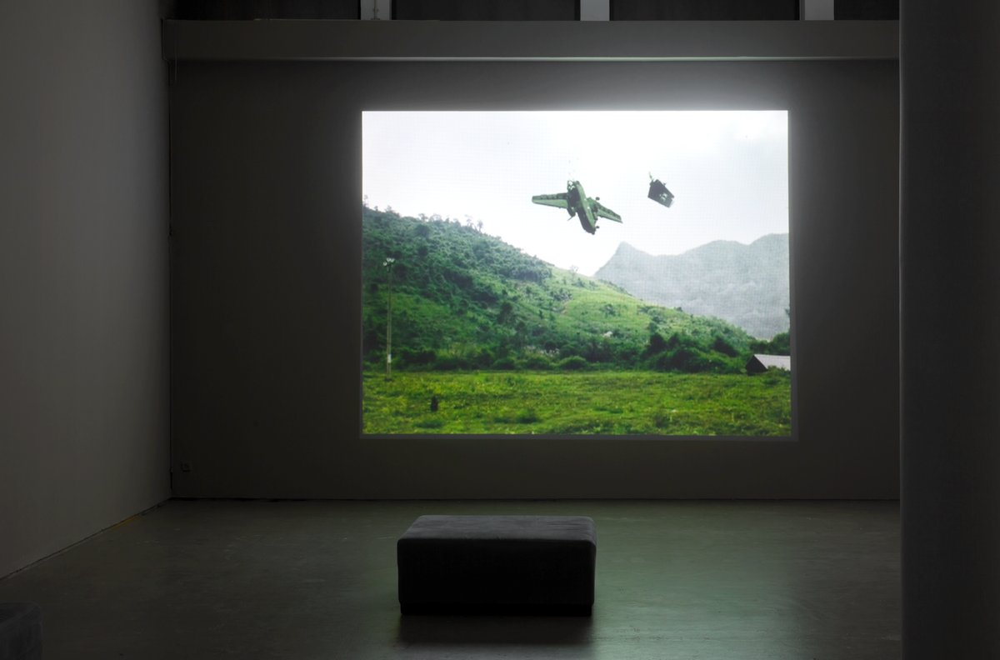
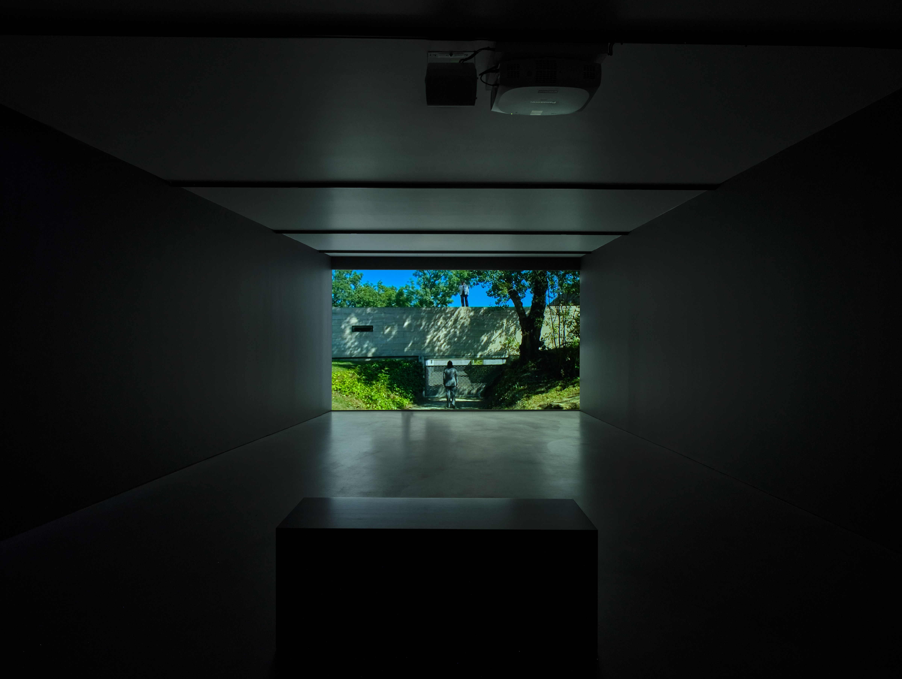
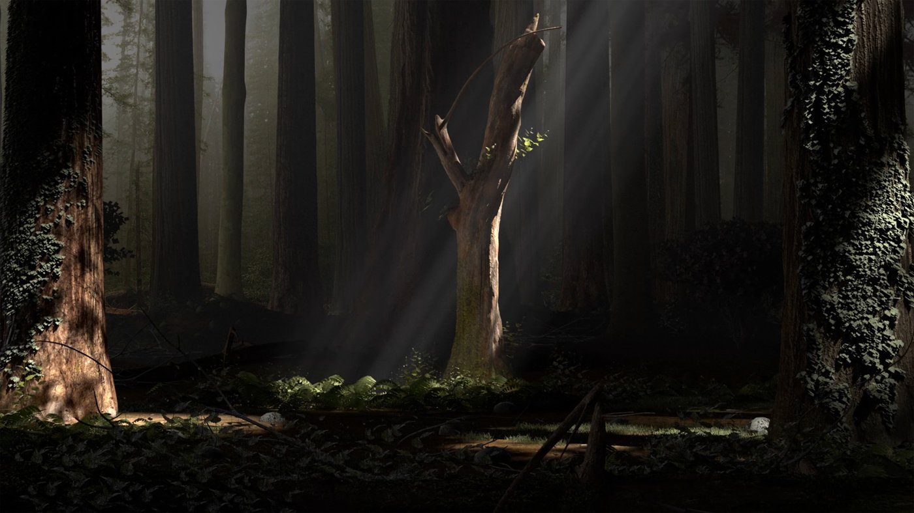
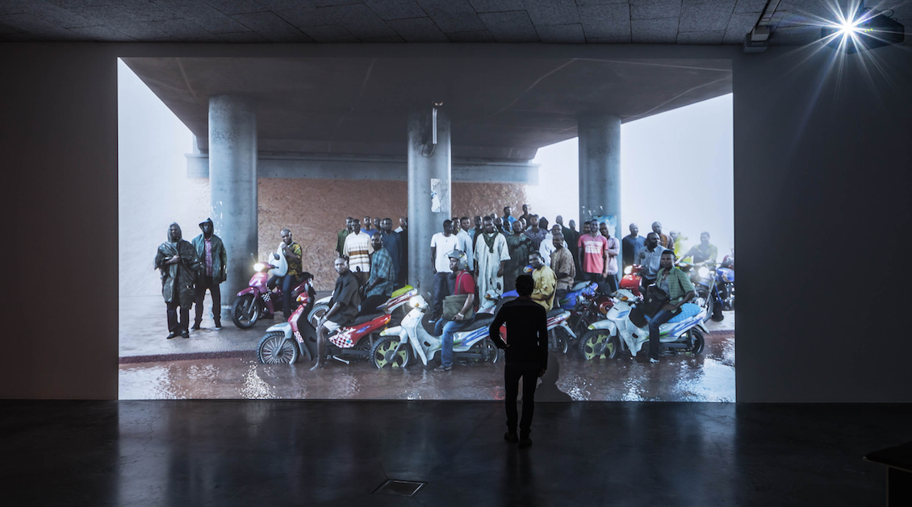
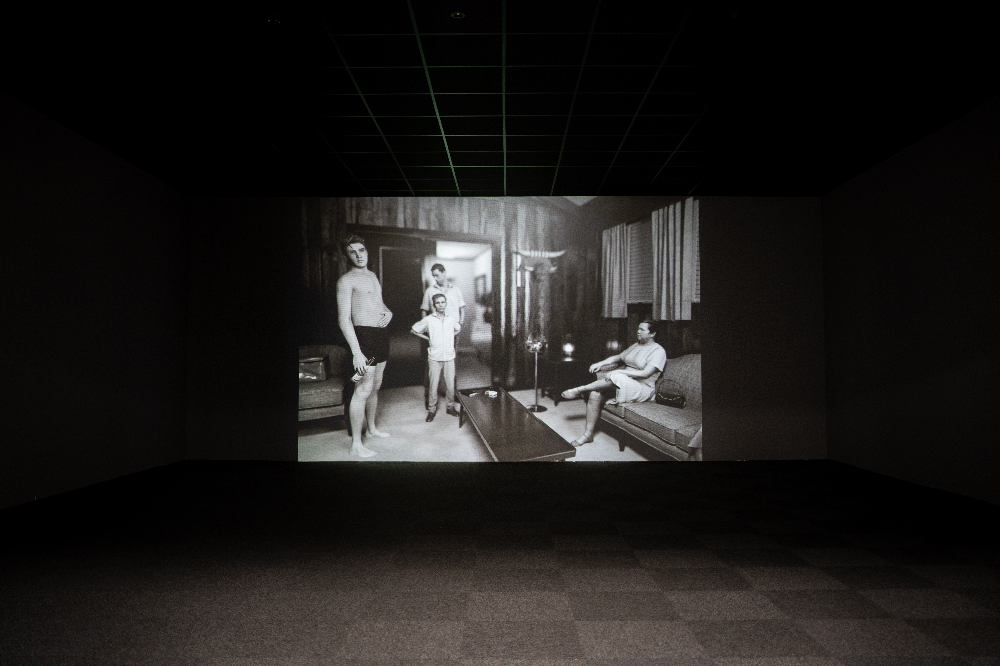
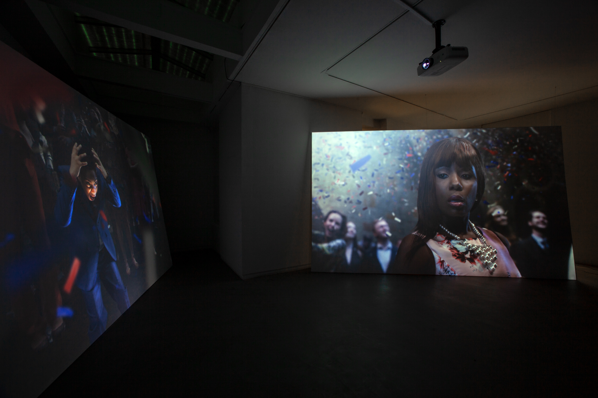
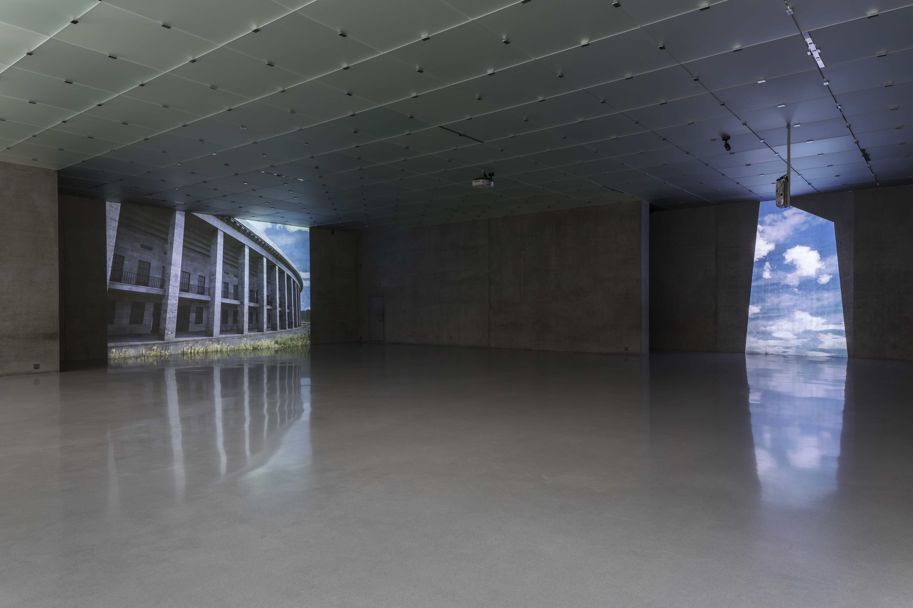
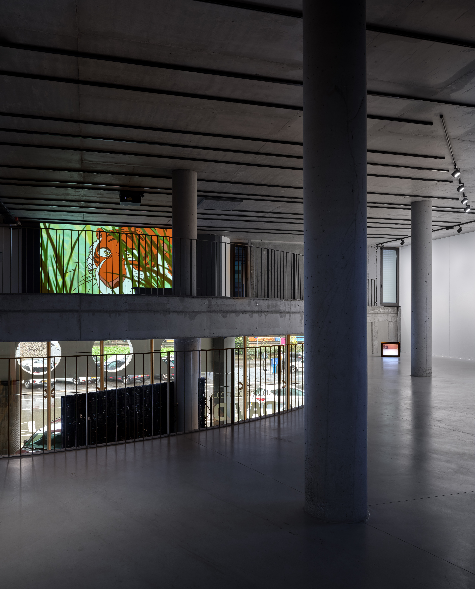
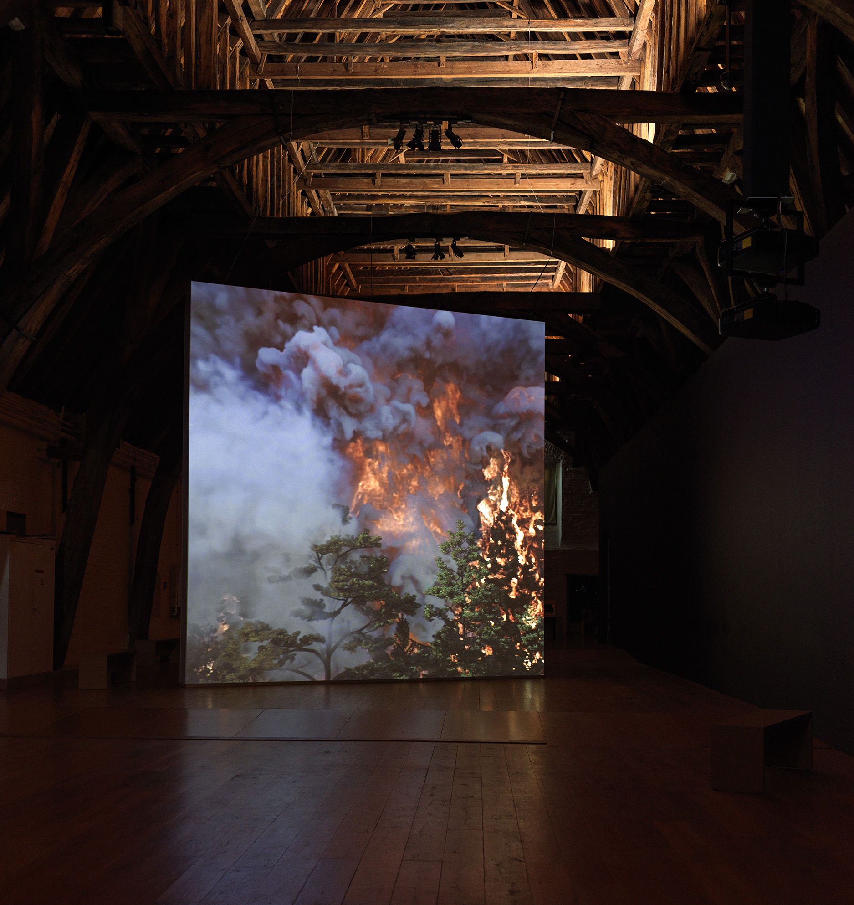

Tecniche di animazione digitale
David Claerbout: l'immagine dopo la lente
La fotografia è stata un sistema di fiducia. L'immagine che viene dopo è calcolata, non ha bisogno della luce e non registra più nulla: Claerbout chiama questa condizione dark optics e risponde lavorando sul tempo.
Frecce ← → per passare da un blocco all'altro, clic su un'immagine per ingrandirla, clic sul fermo immagine per avviare un video.
1Da dove parte
Belga, nato nel 1969, si forma come pittore e litografo. Vuole dare una seconda vita a fotografie ferme trovate nei libri. Non si chiede come far muovere un personaggio, ma che cosa accada se una fotografia comincia a durare.
«I am a self-taught very hungry autodidact in the domain of the moving image animation film video»
Sono un autodidatta molto affamato nel campo dell'immagine in movimento, dell'animazione, del film, del video.
David Claerbout, Virtual Image Making, Louisiana Channel, 2020, min 00
2La fotografia che dura 2001
Vietnam, 1967, near Duc Pho (reconstruction after Hiromichi Mine)
La fotografia di un reporter: un aereo colpito da fuoco amico il 3 agosto 1967. L'aereo resta sospeso, mentre la luce del paesaggio, fotografato nello stesso luogo nel 2000, cambia con le nuvole. Sono centinaia di foto in dissolvenza, in un loop di circa tre minuti.

Ingrid Hölzl: il presente fotografico
La post-produzione digitale fa mostrare a una fotografia un presente possibile. Lo spettatore vede una foto, poi dubita del medium quando la luce cambia. L'opera è fatta di fotografie vere, ed è animazione: il movimento non è mai accaduto.
3La durata contro l'orologio
Il tempo dell'orologio
Il tempo organizzato dai 24 fotogrammi al secondo è una versione piatta e distribuibile di qualcosa di complesso, come la cultura dell'immagine. Entrambe sono potenti, ed entrambe sono pericolose se scambiate per la cosa vera. Nel 2020 chiama eterocronia ciò che cerca dentro questo tempo: la pluralità della durata.
«I call it heterochrony it's the plurality of duration which is frightening in a way because it means that you no longer can define a space of time»
La chiamo eterocronia: è la pluralità della durata, che in un certo senso spaventa, perché significa che non si può più definire uno spazio di tempo.
Louisiana Channel, 2020, min 05
Scolpire nella durata
Dare forma alla differenza tra il minuto 1 e il minuto 10. Davanti a un'animazione la vita sta nell'animazione e chi guarda invecchia passivo; scolpendo la durata, è lo spettatore a sentirsi elaborato.
«you feel the difference between minute 1 and minute 10»
Si sente la differenza tra il minuto 1 e il minuto 10.
Conversazione con Sara Dolfi Agostini, 2021, min 31
La durata non è il tempo
La durata, precisa Claerbout nel 2016 (intervista di A Will Brown, Studio International), è uno stato intermedio, una temporalità che si mantiene finché un'altra non la sostituisce. Nel 2026 definisce la freccia del tempo una proposta comoda su cui è costruita la tecnologia (intervista di Julieta Aranda, Spike). In This Sun is Always Shining (2021) la promessa moderna di illuminare tutto diventa troppa luce, con gli schermi sempre accesi.
Nel 2018 aggiunge che l'orologio impone al tempo un concetto spaziale, e che l'immagine filmica ha una violenza che l'occhio non riesce ad analizzare mentre guarda: per questo un film si ricorda peggio di una fotografia (conversazione con Thomas D. Trummer, Kunsthaus Bregenz).
4La luce al posto della storia 2004
Bordeaux Piece
Una finzione in sette inquadrature, dalla storia del Disprezzo di Godard, recitata di nuovo ogni dieci minuti dalle 5.30 alle 22, nella casa di Rem Koolhaas: 13 ore e 43 minuti. Il racconto si consuma, la luce diventa il soggetto. Sembra un loop, ma sono 490 inquadrature girate in giorni diversi: è tempo registrato. Per Michael Walsh (2022) la storia non sparisce: la ripetizione crea un equilibrio tra figura e sfondo. Le riprese durarono quasi un mese, e ogni scena fu recitata circa 75 volte.
«I sculpt in time I don't work with film or with actors I work with everything that's the background»
Scolpisco nel tempo. Non lavoro con il film o con gli attori: lavoro con tutto ciò che è lo sfondo.
Artist talk, Galerie Rudolfinum, Praga, 2020, min 21

5Dark Optics dal 2016
Formulato in The Silence of the Lens (e-flux Journal, 2016) e sviluppato nella conferenza all'e-flux (2019) e nel libro del 2021.
Autenticazione reciproca
La fotografia si fonda su un patto tra chi fotografa, il dispositivo e il soggetto. Su questo patto, durato circa 160 anni, si sono appoggiate prove, politica e informazione. Una foto è catturata: il caso è la garanzia.
Immagini senza luce
Le tecniche nuove registrano al buio, emettendo un segnale. La fotografia era un medium di speranza perché la luce ne era la condizione. Le immagini smettono di essere registrazioni ed esistono come fenomeni mentali.
Incontrare ed evitare
La fotografia segue una logica dell'incontro. La scansione, nata per la difesa, segue una logica dell'evitamento e riduce il mondo a una collezione di ostacoli.
Concetto, conversazione, consenso
Dopo la lente, l'immagine si regge sull'accordo. La conseguenza è politica: dove manca la registrazione, la verità dipende dal consenso. L'esempio viene dallo studio: la vegetazione di Olympia richiederebbe una laurea in biologia, e si decide con Google e Wikipedia.
«dark optics one could say is vision without the lens vision without the eye it's a form of technological vision where technological vision and the brain have merged into some kind of science-fiction unity»
Le dark optics sono, si potrebbe dire, visione senza lente, visione senza occhio: una forma di visione tecnologica in cui visione tecnologica e cervello si sono fusi in una specie di unità fantascientifica.
Galerie Rudolfinum, Praga, 2020, min 07
La fine di un sistema di garanzie
All'EYE Filmmuseum (2018) Claerbout propone una periodizzazione, che presenta come un'invenzione d'artista: l'era analogica, un sistema di «checks and balances», va dal 1839 all'11 settembre 2001, e da lì comincia un ritorno all'Ottocento. Il digitale non cancella le pratiche, cinema, documentario, fotografia: le divora lasciandone intatti i rituali. Il timore è politico: le immagini sintetiche possono riportare immagini ideologiche, realtà costruite da altri (Flow Series, 2017).
6Fare immagini senza camera dal 2010
Ogni dettaglio deve essere deciso, e si osserva a memoria: il 3D è, per Claerbout, un bastione di conservatorismo pittorico.
Travel
Idea del 1996, tre anni di produzione e uno di calcolo: un bosco interamente in 3D, costruito per sembrare una ripresa. L'idea viene da una collezione di musica di rilassamento, ed è stata tenuta per quasi diciassette anni, finché la tecnologia non è sembrata adatta (Trummer, 2018).

Oil Workers
Un piccolo JPEG trovato online è ricostruito in 3D, e la camera si muove dentro una fotografia che non è mai stata tridimensionale. Claerbout dice di aver lavorato con l'acqua, e di aver ottenuto petrolio.

KING e The Confetti Piece
Una fotografia di Elvis Presley del 1956 è ricostruita con una lente solo virtuale. Migliaia di coriandoli calcolati cadono in silenzio, e il dettaglio decisivo è l'urlo, muto, di un bambino. Le figure sono scansionate con 45 fotocamere.
«the camera is a vampire isn't it the virtual camera is a sign of death»
La camera è un vampiro, no? La camera virtuale è un segno di morte.
Su KING, Louisiana Channel, 2020, min 10


7Olympia dal 2016, per mille anni
Lo stadio che crolla in tempo reale
Una replica dello stadio di Berlino del 1936, costruita con un software per videogiochi e posata pietra su pietra con la scansione fotografica, si deteriora per mille anni. Il meteo arriva da dati reali, la camera compie un giro ogni ora. Prende alla lettera il valore di rovina di Albert Speer. L'idea risale al 2009 o 2010; ogni pietra è collocata nella sua posizione esatta, e un programma parallelo salva un'immagine ogni cinque minuti (Flow Series, 2017).
«if I would die tomorrow I might say this has been the project of my life»
Se morissi domani, potrei dire che questo è stato il progetto della mia vita.
Conversazione con J. J. Charlesworth, Flow Series, 2017, min 04

Una finestra elettronica e una vita
Il tempo reale è il confronto tra una finestra elettronica e la propria esperienza vissuta. La durata biologica di una vita contro la durata immaginaria di un millennio. Lo studio programma i primi venticinque anni, poi subentrerà un altro. A guardarla alle cinque del mattino, l'opera è un gigante addormentato. Il metodo è lo stesso di The Algiers' Sections of a Happy Moment: una vendetta indiretta sul tempo ideologico, affidata alle erbacce.
«a motive which would be politically very hot and find a way of cooling it down not neutralizing»
Un motivo politicamente molto caldo, e trovare un modo di raffreddarlo, non di neutralizzarlo.
Conversazione con Thomas D. Trummer, Kunsthaus Bregenz, 2018, min 43
Il meteo di domani ad Amsterdam
L'unica opera pubblica di Claerbout è una parete LED nella stazione della linea metropolitana Nord-Sud presso la Stazione Centrale di Amsterdam: un paesaggio olandese annuncia il tempo del giorno dopo, mentre un operaio digitale, con il volto dell'artista, è sempre occupato in lavori inutili (EYE Filmmuseum, 2018).
8L'animazione senza storia 2016
The Pure Necessity
Il libro della giungla (1967) ridisegnato a mano fotogramma per fotogramma, per oltre tre anni, senza Mowgli, senza canzoni e senza antropomorfismo: gli animali si grattano, dormono, sbadigliano. Il massimo lavoro manuale per un tempo vuoto. Toni Ross (2020) lo legge contro il culto della velocità e contro i documentari spettacolari sulla natura. L'idea nasce rivedendo il film su YouTube dopo quarant'anni; un primo tentativo in 3D fallisce, e servono animatori tradizionali (Flow Series, 2017).
«the moving image is a definition of movement animation is a celebration of life of inert matter so the ideology behind any moving image will always be life so death is excluded»
L'immagine in movimento è una definizione del movimento; l'animazione è una celebrazione della vita della materia inerte. L'ideologia dietro ogni immagine in movimento sarà quindi sempre la vita: la morte è esclusa.
Louisiana Channel, 2020, min 18

9L'immagine calcolata 2019-2020
Wildfire (meditation on fire)
Un incendio silenzioso, 24 minuti, interamente calcolato. Nasce da una riflessione sul fuoco nella pittura di Memling e dal tentativo di simulare una natura morta del fuoco, così dettagliata da saturare i computer dello studio. Tutto si muove tranne le fiamme, e chi guarda avverte un calore che non c'è (Finn Blythe, Ocula, 2025). Il fuoco prende per poco la forma di ciò che consuma, e fermarlo crea un'illusione di solidità (intervista di Isa Bickmann, Kunstforum, 2025).

The Inflammable Image
L'immagine calcolata ha una struttura cartesiana, fatta di poligoni e indirizzi: è scissa e disincarnata, una finestra su una finestra.
10La follia fotografica e l'intelligenza artificiale dal 2022
Claerbout parla di follia fotografica: l'apparecchio teneva insieme fonti comuni, e il loro disfarsi produce allucinazioni private e teorie del complotto. Contro le camere d'eco indica la conoscenza della storia (Blythe, 2025). L'idea compare già nel 2018: duecento anni di fotografia hanno offerto un'analogia costante con un mondo esterno coerente, e senza di essa il folle deve analizzarsi da solo (conversazione con Trummer).
The Close
Un filmato di Glasgow degli anni Venti si ferma su un bambino, e la camera entra in una terza dimensione impossibile (Vincent Warne, Millennium Film Journal, 2022). Claerbout lega assenza di voce, luce e cura (Aranda, 2026).
Birdcage e Backwards Growing Tree
In Birdcage un'esplosione resta sospesa davanti a una villa: il movimento è della camera, ma la percezione incompleta lo attribuisce al tempo (Bickmann, 2025). Backwards Growing Tree dura cinque anni all'indietro, e solo alla fine si capisce che due figure stavano piantando l'albero (Aranda, 2026).
The woodcarver and the forest
Circa 20-22 ore: un intagliatore tra alberi generati, finché il bosco diventa una foresta di cucchiai. Piacere e distruzione risultano legati, come in un video ASMR (Aranda, 2026). L'immagine generata, dice Claerbout, è un dolce di solo zucchero, ma rivela lacune nei processi inconsci (Blythe, 2025). Nello studio l'intelligenza artificiale serve a progettare i film, non a produrne i risultati (Hamburger Bahnhof, 2025).
«We're still in the dopamine phase»
Siamo ancora nella fase della dopamina.
Conversazione all'Hamburger Bahnhof, Berlino, 2025, min 59
11Artisti attinenti
- Ian Cheng, Emissaries (2015-17): il game engine gira senza fine, con agenti che decidono.
- John Gerrard, Solar Reserve (2014), Western Flag (2017): simulazioni continue di luoghi industriali.
- Jakob Kudsk Steensen, Berl-Berl (2021): natura simulata, chiamata dall'artista slow media.
- Alan Warburton, Goodbye Uncanny Valley (2017), RGBFAQ (2020): la critica del 3D dall'interno dell'industria.
- Harun Farocki, Parallel I-IV (2012-14): l'immagine calcolata che sostituisce la ripresa.
- Daniel Crooks, Time Slice (dal 1999): la durata come materia da tagliare.
- William Kentridge, The Refusal of Time (2012): il tempo standardizzato e la sincronizzazione degli orologi.
Fonti
- David Claerbout, The Silence of the Lens, e-flux Journal 73, 2016; The Inflammable Image, 2020; Unseen Sound; Dark Optics, éditions B2, 2021.
- Conversazioni con Andreas Fiedler, 2017, e Thomas D. Trummer, 2018.
- Ingrid Hölzl, 2011; Steven Jacobs, 2017; Mathilde Roman, 2016; Toni Ross, 2020; Michael Walsh, Durational Cinema, 2022.
- Julieta Aranda, intervista, Spike, 2026; Finn Blythe, Ocula, 2025; Isa Bickmann, Kunstforum 307, 2025; A Will Brown, Studio International, 2016; Vincent Warne, Millennium Film Journal 76, 2022; David Claerbout, This Sun is Always Shining, 2021.
- Talk citati: Virtual Image Making, Louisiana Channel, 2020; Galerie Rudolfinum, Praga, 2020; On Dark Optics, e-flux, 2019; conversazione con Sara Dolfi Agostini, 2021; Hamburger Bahnhof, 2025; Flow Series, con J. J. Charlesworth, 2017; Kunsthaus Bregenz, con Thomas D. Trummer, 2018; EYE Filmmuseum, 2018. Le citazioni sono trascritte dall'audio; il minuto rimanda al video.
- Scheda del database: David Claerbout. Lezione collegata: Storia dell'animazione.
- Le immagini sono usate a scopo didattico. Se sei titolare dei diritti e vuoi che un'immagine venga tolta, apri una issue nel repository.